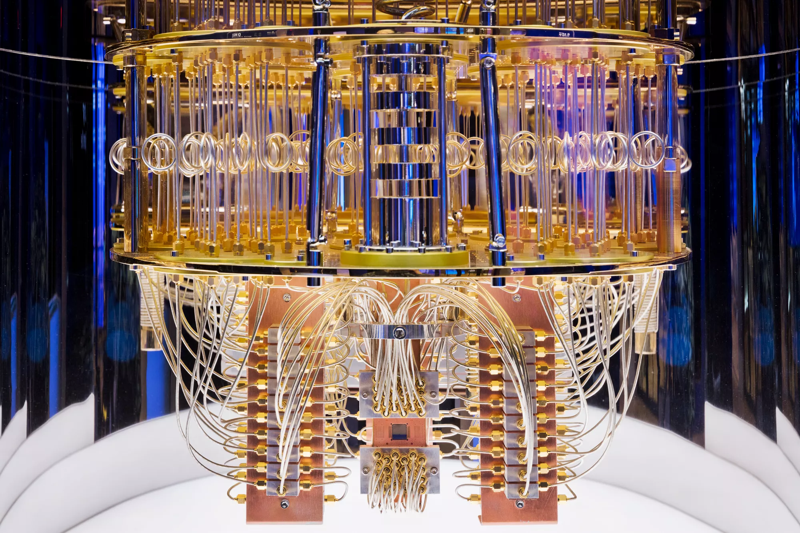
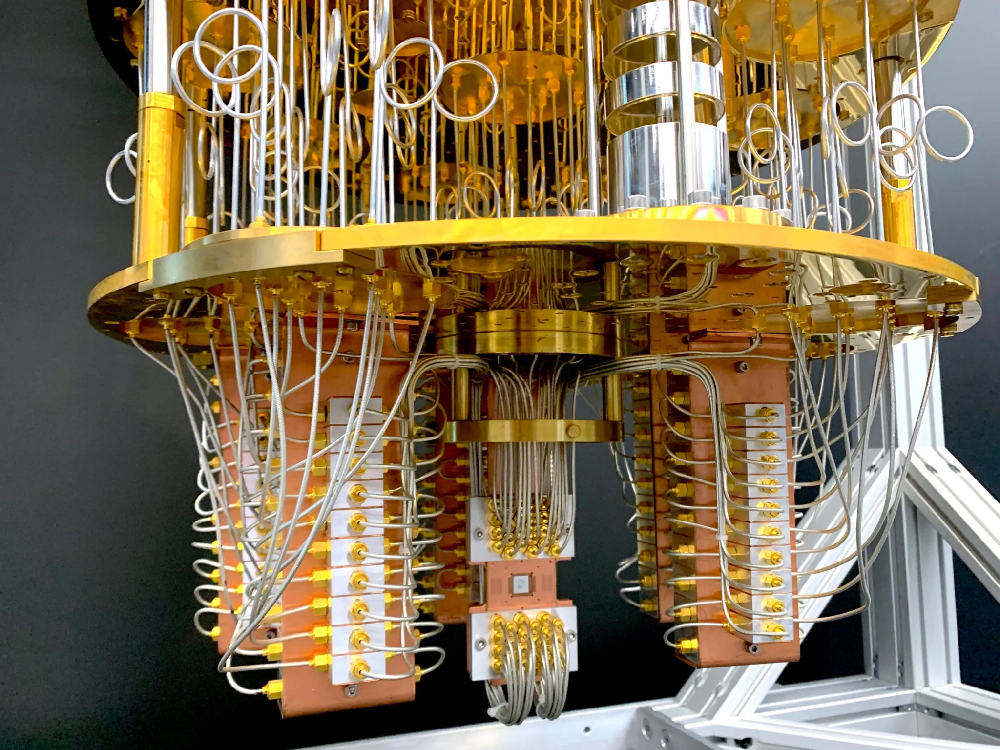

Home
Quantum Computers- An Introductory Guide
This website is a place for both middle and high school students to be able to learn about and understand quantum computers and mechanics in a way that is easily understood. The content discussed in this website is a compilation and summarized version of many different sources (the full list can be found below), and will discuss how quantum computers work, how they carry out a function, include 3D models of them, and will discuss the future of quantum computing. This website was created for fully educational purposes. Have fun exploring!

Source: IBM
About
Hi, my name is Isabella Mariam Feinstein and I am a middle school student. I created this website and the this website and the models that are featured within it. If you have any questions about the content included, or would like to use my model for other purposes, contact me at hlake5913@gmail.com.

Source: Popular Science, Charlotte Hu
References
Cardinal, D. (2019, January 10). IBM unveils Q System One quantum computer. ExtremeTech. Retrieved April 1, 2026, from https://www.extremetech.com/extreme/283427-quantum-computing-goes-commercial-with-ibms-q-system-one
Geck, L., Kruth, A., Bluhm, H., Van Waasen, S., & Heinen, S. (2019, December). [General architecture of a quantum computer, going from a high-level description of a quantum algorithm, to the actual physical operation of the qubits in a layered architecture [9].] [Chart]. ResearchGate. https://www.researchgate.net/figure/General-architecture-of-a-quantum-computer-going-from-a-high-level-description-of-a_fig1_337695908
Hu, C. (2022, September 7). In photos: Journey to the center of a quantum computer. Popular Science. Retrieved April 1, 2026, from https://www.popsci.com/technology/in-photos-journey-to-the-center-of-a-quantum-computer/
IBM Debuts Next-Generation Quantum Processor & IBM Quantum System Two, Extends Roadmap to Advance Era of Quantum Utility. (2023, December 4). IBM. Retrieved April 1, 2026, from https://newsroom.ibm.com/2023-12-04-IBM-Debuts-Next-Generation-Quantum-Processor-IBM-Quantum-System-Two,-Extends-Roadmap-to-Advance-Era-of-Quantum-Utility
Ivezic, M. (n.d.). Why do quantum computers look so weird? PostQuantum. Retrieved December 1, 2018, from https://postquantum.com/quantum-computing/quantum-computer-weird/
Medley, J. (n.d.). The model-viewer web component. Web.dev. Retrieved May 11, 2026, from https://web.dev/articles/model-viewer
Newrock, R. (1997, November 24). What are Josephson junctions? How do they work? Scientific American. https://www.scientificamerican.com/article/what-are-josephson-juncti/
Olsen, E. (2019, March 15). How quantum computers work. Electronics360. https://electronics360.globalspec.com/article/13553/how-quantum-computers-work
Run your first circuit on hardware. (n.d.). IBM Quantum Platform. Retrieved April 13, 2026, from https://quantum.cloud.ibm.com/docs/en/guides/hello-world
Schneider, J., & Smalley, I. (n.d.). What is quantum computing? IBM. Retrieved October 12, 2025, from https://www.ibm.com/think/topics/quantum-computing
Soeder, J. (2023, Spring). Quantum leap. Cleveland Clinic Magazine. https://magazine.clevelandclinic.org/2023-spring/quantum-leap
Viswanath, P. (2021, February 7). Quantum states and the Bloch Sphere. Quantum Untangled. https://medium.com/quantum-untangled/quantum-states-and-the-bloch-sphere-9f3c0c445ea3
What is quantum computing? (2023, June 8). Serokell. https://serokell.io/blog/what-is-quantum-computing
Yanix. (2020). Quantum Computer. https://sketchfab.com/3d-models/quantum-computer-82006aac41744663a161ab844264ac2a